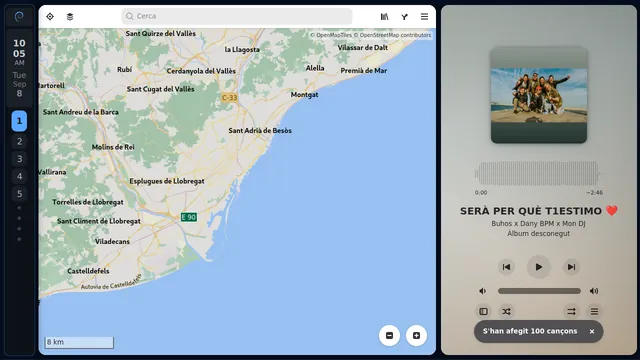
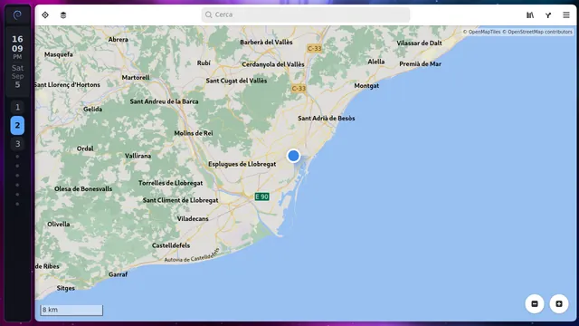
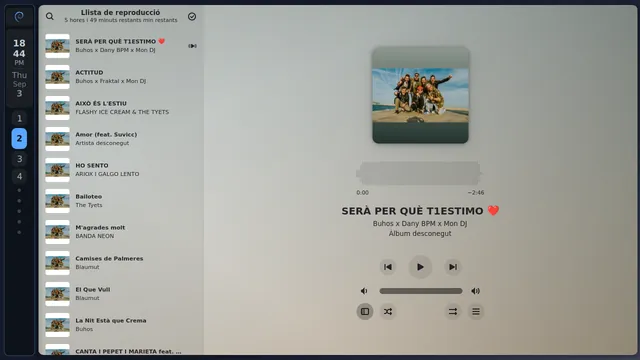
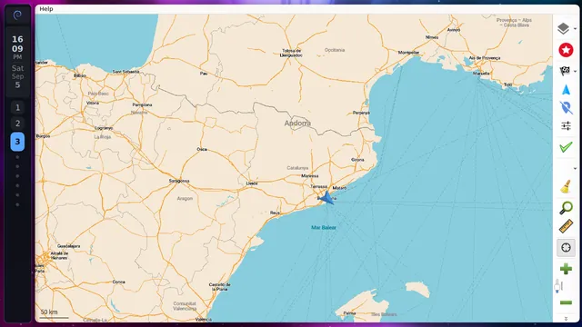
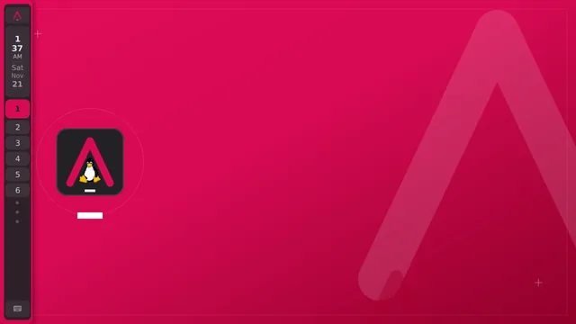

aa-linux
Linux phone-side implementation of the Android Auto protocol.
aa-linux implements the phone side of an Android Auto session on Linux. A head unit or the Desktop Head Unit initiates the session over TCP, FunctionFS USB, or Bluetooth/Wi-Fi; aa-linux negotiates the protocol, authenticates over TLS, discovers services, captures an X11 display, encodes it as H.264, and relays touch, key, and vehicle sensor messages. The bundled openbox + quickshell shell provides a car-oriented desktop for the projected display.
Contents
Overview
This is an experimental, AI-assisted implementation built to study and document the Android Auto protocol. The code is kept small enough to follow the handshake, framing, and media paths. It is not production software.
The implementation replaces the phone-side Gearhead component. The head unit is a car display or Google's Desktop Head Unit emulator (DHU); neither is included in this repository. Production phone-side TLS credentials are also not included.
| Role | Phone side (Gearhead replacement) |
|---|---|
| Transports | TCP :5277, FunctionFS USB, Bluetooth + Wi-Fi |
| Video | H.264 from X11 via FFmpeg x11grab, or a test pattern |
| Audio | AAC-LC path; live PipeWire capture is not implemented |
| Input | Touch and key event forwarding |
| Sensors | Vehicle sensor messages on D-Bus at org.aalinux.sensors |
| Desktop | openbox + quickshell, including the Onboard on-screen keyboard |
| Protocol | Protobuf definitions in aa-linux/protos/oaa/ |
| License | GPL-3.0-or-later |
Architecture
The head unit starts the session. aa-linux authenticates as the phone, sends the captured screen and audio, and receives input and vehicle sensor messages in return. The same protocol state machine is used with each transport.
+--------------+ protocol + TLS +--------------+
| aa-linux |<----------------------->| head unit/DHU|
| phone side | | |
| | | |
| X11 capture |------ H.264 ----------->| video render |
| audio input |------ AAC-LC ---------->| audio sink |
| input sink |<----- touch / keys -----| input control|
| sensor API |<----- sensor data ------| sensor source|
+--------------+ +--------------+Session sequence
- Transport. TCP
:5277, FunctionFS USB, or Bluetooth + Wi-Fi setup. - Negotiation. Protocol version and supported services.
- Security. TLS and phone authentication.
- Discovery. Video, audio, input, and sensor channels.
- Session. H.264/AAC toward the head unit; touch, key, and sensor messages back.
Transports
All transports use the same phone-side implementation. TCP is the shortest path for protocol work; USB and wireless add platform and pairing requirements.
| Transport | Entry point | Notes |
|---|---|---|
| TCP | ./aa-linux.sh tcp |
Listens on :5277. Simplest local integration test with the DHU. |
| USB | ./aa-linux.sh usb |
FunctionFS gadget. Start it with sudo ./aa-linux.sh gadget-start; local tests can use dummy_hcd. |
| Wireless | ./aa-linux.sh wireless |
Bluetooth pairing and Wi-Fi credential handoff; the Android Auto protocol then runs over TCP. |
USB mode requires libcomposite, usb_f_fs, and, for local
tests, dummy_hcd. Wireless setup can replace the machine's normal
network connection.
Implementation
Protocol definitions and generated modules are kept separate from transport and media code. The generated Python modules are checked in so the project can run without regenerating them.
aa-linux/
├── aa-linux/ phone-side implementation
│ ├── protos/oaa/ protobuf source definitions
│ └── generated/oaa/ generated Python modules
├── openbox-desktop/ openbox + quickshell desktop shell
├── screenshots/ screenshots used by the README and this site
├── aa-linux.sh CLI entry point
├── dhu.sh Desktop Head Unit wrapper
└── pyproject.toml Python package metadata- aa-linux/protos/oaa/ — protobuf source definitions
- aa-linux/generated/oaa/ — generated Python modules
- THIRD_PARTY_NOTICES.md — protocol research attribution
The definitions are based in part on mrmees/open-android-auto, with corrections documented in the individual source files.
Build & run
TCP on one machine is the recommended first integration test. The default video source is an FFmpeg test pattern, so no X server or application is needed for that smoke test.
Requirements
- Python 3.10+ with
protobufanddbus-fast - FFmpeg with H.264 and AAC support
- X11 and
x11grabfor real screen capture - Xvfb/Xephyr, openbox, and quickshell for the bundled desktop
- A compatible head unit or the Desktop Head Unit, obtained separately
Setup
python3 -m venv .venv
. .venv/bin/activate
pip install -e .
./aa-linux.sh self-testRun
# Terminal 1: virtual desktop + TCP
./aa-linux.sh desktop
# Terminal 2: Desktop Head Unit
./dhu.sh
# Optional: launch an app inside the desktop
DISPLAY=:99 firefox &# Terminal 1: listen on TCP port 5277
./aa-linux.sh tcp
# Terminal 2: connect the DHU
./dhu.sh# Terminal 1: start a FunctionFS gadget
sudo ./aa-linux.sh gadget-start
# Terminal 2: run the phone side over USB
./aa-linux.sh usb
# Terminal 3: connect the DHU over USB
./dhu.sh --usb
# When finished
./aa-linux.sh gadget-stop# Discover the head unit's Bluetooth address
./aa-linux.sh scan-bt
# Run the wireless handshake
./aa-linux.sh wireless \
--bt-address AA:BB:CC:DD:EE:FF \
--cert CERT --key KEYScreenshots
Captured from the bundled openbox-desktop shell running on Xephyr at 1280×720.










Click a screenshot to open the full-size image.
Status
The current implementation is functional enough for protocol development and bench testing. Head-unit compatibility varies.
| Component | State | Notes |
|---|---|---|
| Protocol negotiation, TLS, authentication, service discovery | implemented | Phone-side handshake |
| H.264 video | implemented | X11 x11grab or FFmpeg test pattern |
| AAC-LC audio path | partial | Live PipeWire capture is still planned |
| Touch and key forwarding | implemented | Head-unit events to the X11 desktop |
| Vehicle sensors over D-Bus | implemented | org.aalinux.sensors |
| TCP transport | implemented | Listens on :5277 |
| FunctionFS USB transport | implemented | Gadget setup; dummy_hcd for local tests |
| Wireless transport | implemented | Bluetooth + Wi-Fi; compatibility varies |
| openbox + quickshell desktop | implemented | Launcher, status bar, sensor dashboard, Onboard |
| Self-tests | implemented | Mock wireless handshake and protocol tests |
| Wayland capture | not implemented | Capture currently uses X11 only |
Roadmap
Not ordered. Items can change as protocol work develops.
- On-screen keyboard
- Improve the ob-grid launcher
- Audio streaming from PipeWire
- Desktop color theme
- Hide the cursor when needed
- NMEA service for GeoClue2
- Show car sensors in the desktop
- Raspberry Pi / Orange Pi OTG USB gadget
- Wayland support
Limitations
- X11 only. Screen capture uses FFmpeg
x11grab. Wayland capture is not implemented. - No production credentials. The development TLS identity is only for the local DHU. A real car requires
--certand--key. - The DHU is not included. Obtain it from the Android Auto SDK.
- Live audio input is incomplete. An AAC-LC path exists, but PipeWire capture is on the roadmap.
- Compatibility varies. Treat this as research software and test on a bench or parked setup.
References
- Desktop Head Unit documentation — official Android Auto DHU documentation
- mrmees/open-android-auto — open protocol research and definitions
- justaguylinux/openbox-setup — openbox desktop base used by openbox-desktop
- quickshell — QML shell used by openbox-desktop
- Onboard — on-screen keyboard
- Artwork — logo, variants, lockups, color themes, wallpapers, and downloads
- Terminal CSS — visual style reference for this page
- LICENSE — GPL-3.0-or-later
- THIRD_PARTY_NOTICES.md — component attribution